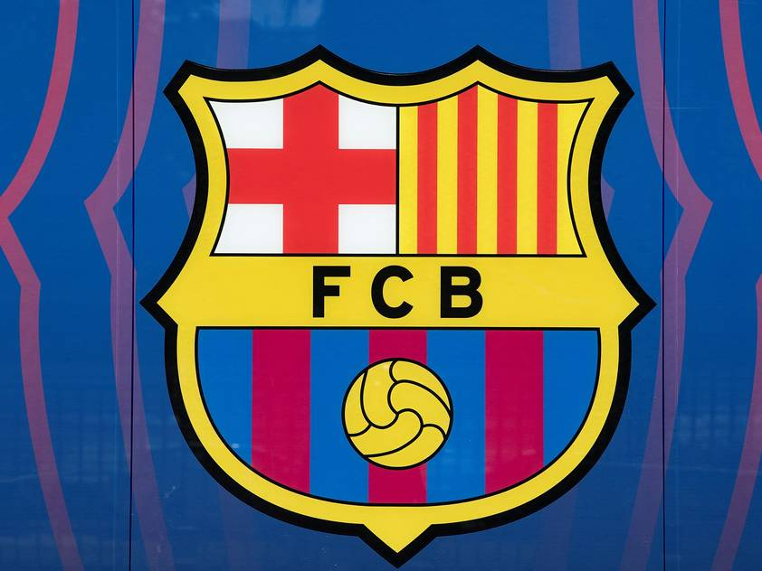

FC BARCELONA
Barcelonaren historia.

FC BARCELONA
FC Barcelonaren estatutuaren garrantzia ulertzeko, garrantzitsua da bere historia ulertzea:
1899an, Joan Gamperrek, suitzar batek, futbola Bartzelonan sartzea erabaki zuen talde bat sortuz. Kluba 1899ko azaroaren 29an sortu zen ofizialki.
Hazi eta indarra hartu zuen, 1902an Macaya Kopa, 1910 - 1912an Pirinioetako Kopa bezalako tituluak irabaziz.
FC Barcelonak 1909an eraiki zuen bere lehen estadioa, 6.000 lagunentzako tokiarekin.
1920ko hamarkadan taldearen ospea eta arrakasta hazi egin ziren. Lehen Txapelketako Liga irabazi zuten 1928 - 1929 denboraldian. Klubaren ospe berriarekin estadio berri bat eraikitzea beharrezkoa izan zen. 1922an 'Les Corts' estadioa eraiki zen, 22.000 lagunentzako lekua zuena.
Garrantzitsua da gogoratzea FC Bartzelona Gerra Zibil batetik bizirik atera dela. 1936an, tropa frankistek klubeko presidente Josep Sunyol fusilatu zuten ezkerreko alderdi bateko kide izateagatik.
FC Barcelonaren zale guztiak harro daude "Bost Kopa" deritzon denboraldiaz. 1951 - 1952 bitartean FC Bartzelonak Kopa, Liga, Latin Kopa, Martini Rosso eta Eva Duarte irabazi zituen aldia izan zen.
1957an Camp Nou eraiki zen, hasierako 90.000 lagunentzako edukierarekin.
Bartzelonaren arrakastak indarra hartu du. 1983an taldeak Bernd Schuster eta Diego Maradona bezalakoak ordaindu ahal izan zituen.
1988 - 1989 urteetan Johan Cruyff mitikoaren etorrerak taldeko zuzendari gisa aldaketa asko ikusi zituen taldean. Barça indartu egin zen eta lehiaketa asko irabazi zituen. Barça zaleak abesten hasi ziren “orain talde berria dugu”.
1996-97an, taldean sartu berri diren bik indartze eragina izan zuten: Bobby Robson aulkian eta Ronaldo zelaian. Urte arrakastatsua izan zen taldearentzat.
2003an, jokalari olatu berri bat sartu zen taldera. Horien artean, Rijkaard eta Ronaldinho, Puyol eta Xavi.
2004 - 2005ean Deco eta Eto'o bezalako jokalariak sartu ziren taldera.
2004 - 2005 denboraldian, FC Bartzelonak liga irabazi zuen. Hau berriro gertatu zen 2005 - 2006an klubak berriro ere liga eta Europako Kopa irabazi zituenean Parisen.
Orri Nagusia